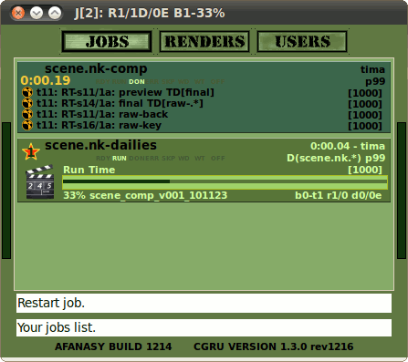

Afanasy in Nuke
Nuke Afanasy interface consists of 'afanasy' nodes (gizmos) and menu items in main CGRU menu.
'afanasy' nodes need to render connected 'Write' nodes and to store render settings.
You can connect one 'afanasy' node to other 'afanasy' node to render other 'Write' node with different settings at the same time.
Each connected node will produce a block - an array of tasks (frames) to render.
You can specify dependence between connected nodes.
One 'Write' node(s) can wait all frames of other "Write" node(s) to be rendered.
Or one frame(s) from one 'Write' node can wait special frame(s) of other 'Write' node(s) to be rendered.
Also 'afanasy' nodes can send dailies jobs to farm.
|
Network:

|
Job: Composition rendering (dailies waiting)

Job: Rendering dailies from completed composition

|
For example, each preview frame will wait the same final frame. And each final frame, will wait the same key and back frame to be rendered, key and back frames are independent and the same frames can be rendered at the same time ('same frame' - frame with the same number).
'Render Selected...':
You can send selected node(s) using a window.
|
Selected nodes has the same frame settings,
or just one node selected:

|
Selected nodes has different frame settings:

|
- Nodes - Selected nodes names. You can check and edit selection.
- First Frame - First frame to render.
- Last Frame - Last frame to render.
- Frames Per Task - Number of frames in task.
- Store Frames Settings - Store frame settings on selected nodes.
- Start Paused - Job will be paused.
'1..5' - two numbers, separated with two points means the lowest and highest value from all selected nodes. Type one number in input field to override frame settings on selected nodes.
'afanasy' node properties:
'General' Tab:

- Job Name - Name to add to job or blocks names. If empty, 'afanasy' node name will be used.
- Use Time Range - Set 'First Frame' and 'Last Frame' fields to project settings.
- First Frame - First frame to render.
- Last Frame - Last frame to render.
- Frames Per Task - Number of frames in task.
- Render - Send job to Afanasy server.
- Start Paused - Job will be paused.
'Parameters' Tab:

- Platform - OS type the job can launch tasks on: 'Any' - any OS, 'Native' - the same as the script was launched on.
- Maximum Hosts - Maximum number of hosts to run job tasks on. '-1' means no limit.
- Priority - Job priority. '-1' - set default priority value.
- Hosts Mask - If not empty, job can run only on hosts which name matches this pattern.
- Exclude Hosts Mask - If not empty, job can not run on hosts which name matches pattern.
- Depend mask - If not empty, job will wait job(s) to be done, which name(s) matches pattern.
- Global Depend mask - The same, but will wait for jobs from any user.
- Capacity - Tasks capacity. '-1' - set this value to default.
- Minimum Capacity Coeff - Variable capacity minimum multiplier. '-1' - means no minimum level.
- Maximum Capacity Coeff - Variable capacity minimum multiplier. '-1' - means no maximum level.
If and minimum and maximum capacity coefficients are '-1' - tasks can't variate capacity, all tasks will have constant capacity value in any case.
'MultiWrite' Tab:

- Connected nodes are independent - nodes can run at the same time, they will not wait each other.
- Reverse dependences on connected nodes - First block will wait second block. Most depended "Write" node usually produces more final result, and it will be executed as soon as possible.
- Down stream will wait for whole frame range rendered - Down stream connected node(s) will wait until whole specified frame range will be rendered. If not checked, each frame will be wait only corresponding frame(s) from this node.
- Force upstream frame settings - All upstream connected nodes will use this node frame range. Connected upstream node can re-force it, if this parameter is checked too.
- Construct single job from all connected write nodes - Constuct a block from each connected 'Write' node and put them into one job. If not checked, each connected 'Write' node will produce a job.
Test Network:

|
Single Job:

|
Multiply Jobs:

|
Example Scene:
$ cd afanasy/examples/nuke
$ ./nuke scene.nk
|